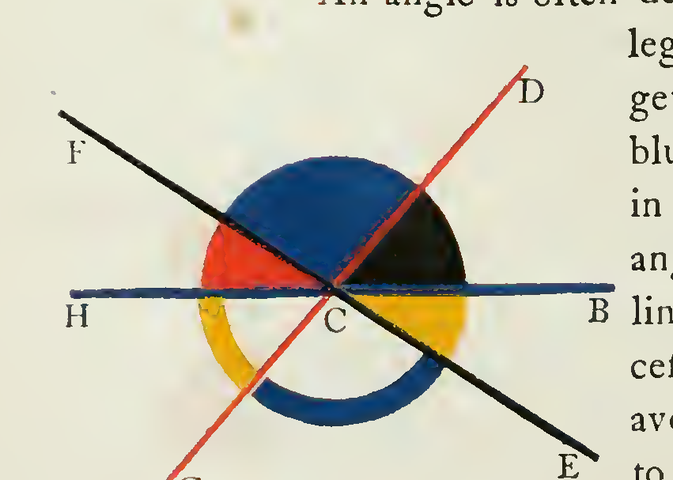

Elucidations — Angles & Proclean Structure¶
Angle Measure & Proposition Taxonomy (pp. xxiv–xxvi, Leaves 28–30)
The twelfth axiom may be expressed in any of the following ways:
Two diverging straight lines cannot be both parallel to the same straight line.
If a straight line intersect one of the two parallel straight lines it must also intersect the other.
Only one straight line can be drawn through a given point, parallel to a given straight line.
Geometry has for its principal objects the exposition and explanation of the properties of figure, and figure is defined to be the relation which subsists between the boundaries of space. Space or magnitude is of three kinds, linear, superficial, and solid.
Angles might properly be considered as a fourth species of magnitude. Angular magnitude evidently consists of parts, and must therefore be admitted to be a species of quantity. The student must not suppose that the magnitude of an angle is affected by the length of the straight lines which include it, and of whose mutual divergence it is the measure. The vertex of an angle is the point where the sides or the legs of the angle meet, as A.


An angle is often designated by a single letter when its legs are the only lines which meet together at its vertex. Thus the red and blue lines form the yellow angle, which in other systems would be called the angle A. But when more than two lines meet in the same point, it was necessary by former methods, in order to avoid confusion, to employ three letters to designate an angle about that point,
f. 0029 · p. xxvthe letter which marked the vertex of the angle being always placed in the middle. Thus the black and red lines meeting together at C, form the blue angle, and has been usually denominated the angle FCD or DCF. The lines FC and CD are the legs of the angle; the point C is its vertex. In like manner the black angle would be designated the angle DCB or BCD. The red and blue angles added together, or the angle HCF added to FCD, make the angle HCD; and so of other angles.
When the legs of an angle are produced or prolonged beyond its vertex, the angles made by them on both sides of the vertex are said to be vertically opposite to each other: Thus the red and yellow angles are said to be vertically opposite angles.
Superposition is the process by which one magnitude may be conceived to be placed upon another, so as exactly to cover it, or so that every part of each shall exactly coincide.
A line is said to be produced, when it is extended, prolonged, or has its length increased, and the increase of length which it receives is called its produced part, or its production.
The entire length of the line or lines which enclose a figure, is called its perimeter. The first six books of Euclid treat of plain figures only. A line drawn from the centre of a circle to its circumference, is called a radius. The lines which include a figure are called its sides. That side of a right angled triangle, which is opposite to the right angle, is called the hypotenuse. An oblong is defined in the second book, and called a rectangle. All the lines which are considered in the first six books of the Elements are supposed to be in the same plane.
The straight-edge and compasses are the only instruments,
f. 0030 · p. xxvithe use of which is permitted in Euclid, or plain Geometry. To declare this restriction is the object of the postulates.
The Axioms of geometry are certain general propositions, the truth of which is taken to be self-evident and incapable of being established by demonstration.
Propositions are those results which are obtained in geometry by a process of reasoning. There are two species of propositions in geometry, problems and theorems.
A Problem is a proposition in which something is proposed to be done; as a line to be drawn under some given conditions, a circle to be described, some figure to be constructed, &c.
The solution of the problem consists in showing how the thing required may be done by the aid of the rule or straight-edge and compasses.
The demonstration consists in proving that the process indicated in the solution really attains the required end.
A Theorem is a proposition in which the truth of some principle is asserted. This principle must be deduced from the axioms and definitions, or other truths previously and independently established. To show this is the object of demonstration.
A Problem is analogous to a postulate. A Theorem resembles an axiom. A Postulate is a problem, the solution of which is assumed. An Axiom is a theorem, the truth of which is granted without demonstration.
A Corollary is an inference deduced immediately from a proposition.
A Scholium is a note or observation on a proposition not containing an inference of sufficient importance to entitle it to the name of a corollary.
A Lemma is a proposition merely introduced for the purpose of establishing some more important proposition.
See Commentary.